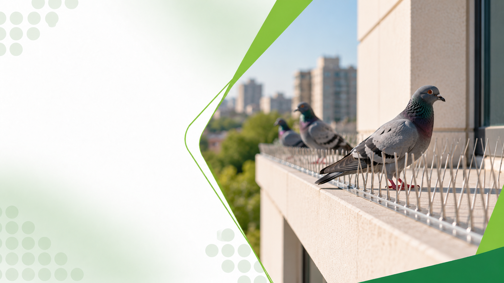

Controle de pombos em Franca, SP
Afastamento técnico de pombos para galpões, indústrias e residências em Franca e região.
Controle de pombos em FrancaManejo Técnico de Aves Urbanas
Proteja fachadas, telhados, forros e estruturas industriais contra contaminação por fezes e ninhos de pombos com o sistema Pigeons Out LH-120 e barreiras físicas profissionais.
A Bioforte combina tecnologia eletromagnética patenteada pelo INPI com barreiras físicas certificadas, afastando pombos de forma definitiva, sem venenos e sem crueldade.

Entenda o serviço
O controle de pombos (Columba livia) é um serviço técnico especializado que visa afastar as aves e impedir que utilizem edificações como local de pouso, abrigo e reprodução.
Por serem protegidos pela Lei de Crimes Ambientais (Lei nº 9.605/1998), os pombos não podem ser envenenados ou abatidos. O controle deve ser feito exclusivamente por meio de exclusão física, barreiras mecânicas e desestabilização do habitat.
Além do incômodo estético, as fezes acumuladas de pombos podem transmitir mais de 50 doenças infecciosas e abrigar parasitas como piolhos e ácaros.
Tecnologia Patenteada
Sistema brasileiro desenvolvido com base em estudos da USP, patenteado pelo INPI e certificado pelas normas internacionais.
O Pigeons Out LH-120 é um reator eletromagnético de baixa frequência que gera pulsos transportados por fios de aço inox 316L a capacitores distribuídos ao longo da estrutura.
Esse campo eletromagnético cria uma barreira invisível que desorienta os pombos e impede que pousem, nidifiquem ou retornem ao local — sem causar nenhum dano às aves, pessoas ou animals.
Assista ao vídeo e veja o sistema em funcionamento
Como trabalhamos
Além do sistema Pigeons Out LH-120, a Bioforte combina barreiras físicas e higienização para garantir o afastamento definitivo das aves.
A equipe analisa a altura, o tipo de telhado, as fachadas e os locais exatos de abrigo, alimentação e pouso das aves.
Remoção segura de fezes e ninhos com equipamentos de proteção individual (EPIs) adequados e aplicação de desinfetante contra patógenos.
Definição do melhor método para a estrutura: telas de polietileno, espetos de proteção, molas helicoidais ou sistemas de desorientação.
A execução em altura é realizada por profissionais certificados na NR35 (Trabalho em Altura) com total segurança.
Acompanhamento da desabituação das aves e conferência da integridade das barreiras instaladas.
Em indústrias alimentícias e centros de distribuição, o controle de pombos é componente crítico do Controle Integrado de Pragas .
Doenças e riscos
O contato direto ou inalação de partículas de fezes secas de pombos representa sério risco sanitário.

Micose profunda transmitida pela inalação de poeira contaminada por fezes de pombos, podendo atingir os pulmões e o sistema nervoso.
Saiba mais sobre pombos
Doença fúngica pulmonar transmitida por esporos presentes em fezes de aves acumuladas em locais úmidos e escuros.
Saiba mais sobre pombos
Infecção bacteriana transmitida pela contaminação de alimentos e água por fezes de pombos.
Saiba mais sobre pombos
Ácaros e piolhos de pombos que se desprendem de ninhos podem picar humanos e causar irritações na pele.
Saiba mais sobre pombosSinais de alerta
A intervenção rápida evita danos estruturais e riscos graves à saúde pública.
As fezes de pombos são ácidas e corrosivas, danificando concreto, telhas e ferragens com o passar do tempo, além de abrigar fungos nocivos à respiração humana.
Para sua casa
Pombos em sacadas, aparelhos de ar-condicionado, caixas d'água e beirais geram riscos diretos para moradores e animais domésticos.
A Bioforte realiza a vedação de vãos e instalação de telas e barreiras esteticamente discretas que protegem o imóvel sem desvalorizá-lo.
Toda intervenção é executada com segurança e descarte apropriado de resíduos biológicos.
Solicitar avaliação residencialPara o seu negócio
Proteção de armazéns, plantas fabris e prédios comerciais contra contaminação aviária.
Em indústrias farmacêuticas, alimentícias e centros de logística, a presença de aves é motivo de não conformidade grave em auditorias. A Bioforte desenvolve projetos de engenharia de exclusão com telas de alta resistência e barreiras definitivas.
Antecipe o problema
O afastamento duradouro depende de eliminar o tripé abrigo-água-alimento.
Alimentar pombos atrai mais espécimes e acelera a reprodução da colônia, agravando os riscos sanitários para toda a vizinhança.
Tranquilidade
O trabalho da Bioforte é 100% legal e respeita a fauna silvestre: não usamos venenos, armas ou substâncias que causem sofrimento aos animais.
Os técnicos que executam a instalação em telhados e fachadas possuem certificação NR35 (Trabalho em Altura) e utilizam equipamentos de ancoragem e proteção contra quedas.
Durante a higienização de fezes, a equipe utiliza respiradores com filtro P3, óculos de vedação e macacões impermeáveis para evitar contaminação por bioaerossóis.
Garantia de instalação e materiais com proteção contra raios ultravioleta (UV).
Nossa autoridade
Técnica, conformidade legal e experiência em soluções definitivas.
Trabalhamos há mais de 30 anos com intervenções em locais de difícil acesso, entregando serviços seguros e com garantia de fixação.
Atendimento regional
Afastamento técnico de pombos para galpões, indústrias e residências em Franca e região.
Controle de pombos em FrancaProjetos de exclusão física de pombos para prédios, empresas e condomínios em Ribeirão Preto.
Controle de pombos em Ribeirão PretoAfastamento de aves para silos, indústrias e comércios em Uberaba e região.
Controle de pombos em UberabaInstalação de barreiras e telas para controle de aves em Guarapuava e Centro-Sul do Paraná.
Controle de pombos em GuarapuavaDúvidas frequentes
Não. Os pombos são protegidos pela Lei de Crimes Ambientais (Lei nº 9.605/1998). Envenenar ou matar pombos é crime passível de multa e detenção. O trabalho da Bioforte é exclusivamente de afastamento técnico e vedação física.
Utilizamos barreiras mecânicas (telas, espetos de policarbonato ou inox, fios tensionados) que impedem fisicamente o pouso e a entrada das aves, forçando-as a buscar outros habitats naturais.
As redes e telas utilizadas possuem tratamento contra radiação ultravioleta (UV), com durabilidade de vários anos sob sol e chuva sem ressecar ou romper.
Sim. Realizamos a limpeza, raspagem e desinfecção química das superfícies antes de instalar as barreiras, utilizando EPIs específicos contra bioaerossóis patogênicos.
Sim, desde que todos os pontos de pouso e abrigo da edificação sejam identificados e protegidos e não haja fontes diretas de alimento acessíveis no local.
Sim. Nossos colaboradores são treinados e certificados na NR35 para trabalho seguro em altura, operando em telhados industriais, torres e fachadas de qualquer porte.
Sim. Cães e gatos podem contrair microrganismos ou parasitas (piolhos e ácaros) caso tenham contato com ninhos ou fezes de pombos.
Entre em contato pelo WhatsApp ou formulário informando a cidade e o tipo de imóvel. Nossa equipe agenda uma visita técnica para avaliar os acessos e apresentar a proposta.
O Pigeons Out LH-120 é um reator eletromagnético de baixa frequência que gera pulsos transportados por fios de aço inox 316L a capacitores, criando uma barreira invisível que desorienta os pombos e impede que pousem, nidifiquem ou retornem ao local. É um sistema não letal, patenteado pelo INPI e certificado pelas normas EN 61000-6-3 e IEC 60335-2-76.
Sim. O sistema é totalmente não invasivo e não letal. O campo eletromagnético de baixa frequência não causa nenhum dano a pessoas, animais domésticos ou às aves. Ele apenas desorienta os pombos, forçando-os a buscar outros habitats. O consumo é de apenas 10W a 33W, menos que uma lâmpada convencional.
O sistema é compatível com telhas de zinco, cerâmica, amianto, vigas e muros. Pode ser instalado em residências, comércios, indústrias, hospitais, escolas, galpões, quadras esportivas e estacionamentos. O sistema é bivolt (110V/220V) e funciona em qualquer rede elétrica.
Proteja sua saúde, suas instalações e atenda às normas sanitárias com um projeto definitivo de afastamento.
A Bioforte realiza vistoria técnica gratuita e apresenta a solução ideal sem agredir o meio ambiente.
Solicitar vistoria técnica gratuitaFranca • Ribeirão Preto • Uberaba • Guarapuava
Continue explorando

Prevenção e controle de insetos e aracnídeos urbanos, como baratas, formigas e aranhas.
Conhecer o serviço
Erradicação e prevenção de roedores, como camundongos, ratazanas e rato de telhado.
Conhecer o serviço
Controle de cupins de madeira seca e de solo para proteger móveis e estruturas.
Conhecer o serviço
Ações preventivas e corretivas contínuas para impedir a proliferação de pragas.
Conhecer o serviço
Higienização periódica de reservatórios de água com emissão de laudo técnico.
Conhecer o serviço